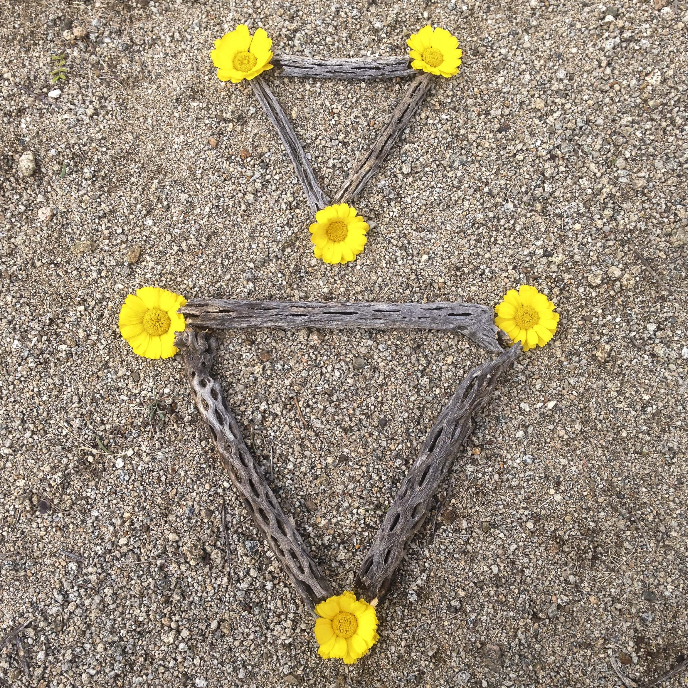

desert designs, 2015
arrangements made from materials found in the deserts of arizona and new mexico

34°54'07.0"N 111°48'32.3"W
32°16'58.2"N 111°10'05.0"W

32°16'33.9"N 111°10'15.4"W

34°48'33.5"N 111°55'37.6"W

34°48'39.8"N 111°53'34.6"W

32°00'26.4"N 109°19'23.4"W
32°01'44.7"N 109°21'25.9"W
32°48'22.9"N 106°16'18.2"W